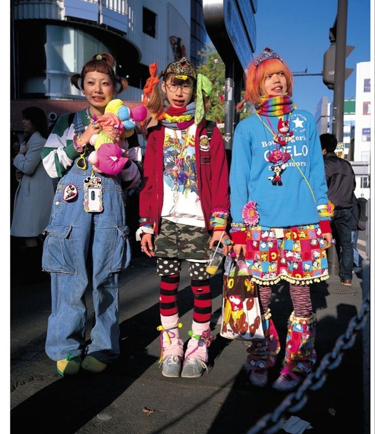
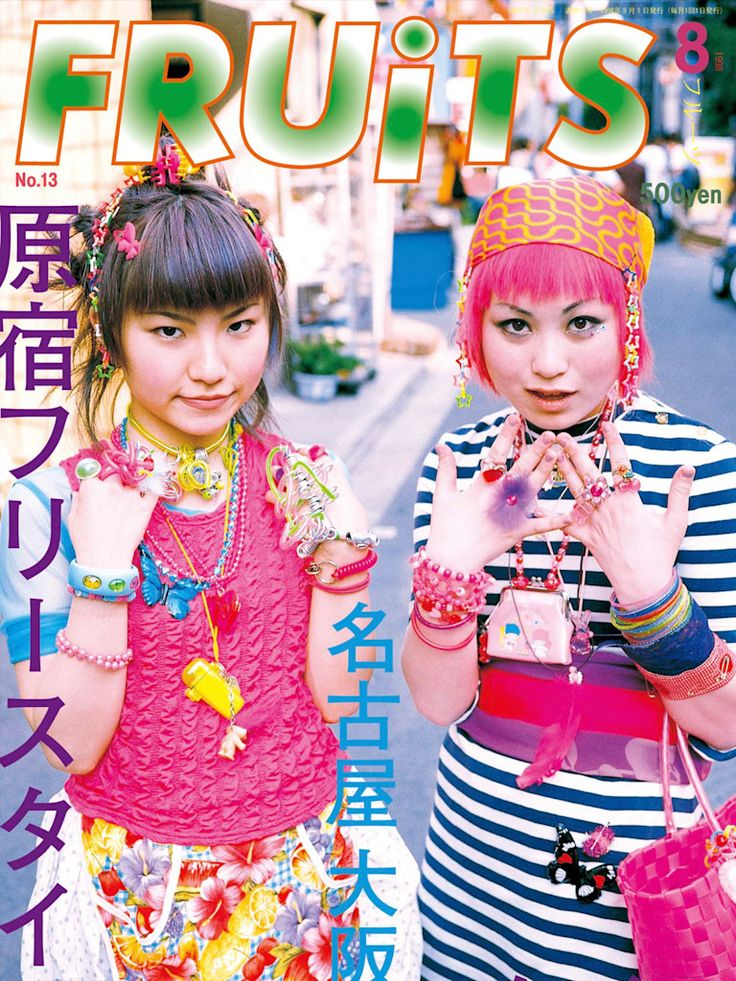

Decora stiliumi pradėjo rengtis ir jį išpopuliarino J-pop deivaitė Tomoe Shinohara. Ji nešiojo daugybę spalvotų aksesuarų ir papuošalų.


Decora yra japoniškas gatvės stilius, kilęs iš Harajuku rajono, vėlyvais devyniasdešimtaisiais
Decora stiliumi pradėjo rengtis ir jį išpopuliarino J-pop deivaitė Tomoe Shinohara. Ji nešiojo daugybę spalvotų aksesuarų ir papuošalų.

Tomoe Shinohara fanai mėgino atkartoti jos stilių. Gatvės stiliaus žurnalas ,,Fruits!" dar labiau šį stilių išpopuliarino ir pavadino decora
Šis stilius yra labai maksimalistiškas, skatina išsiskirti iš minios.